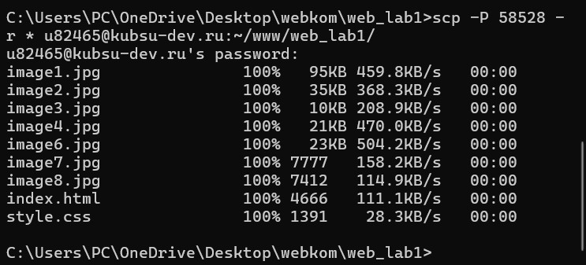
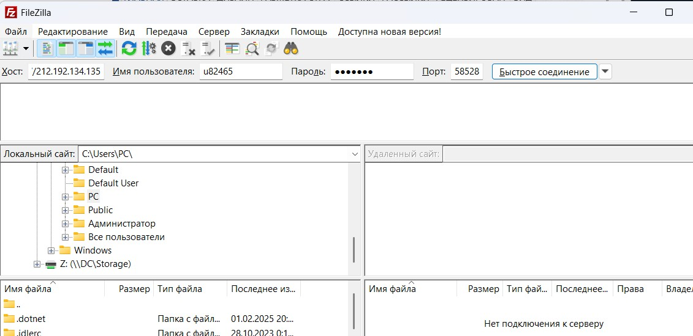
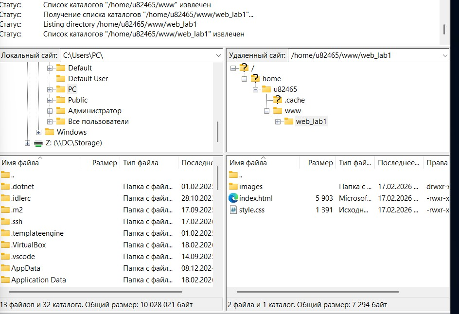
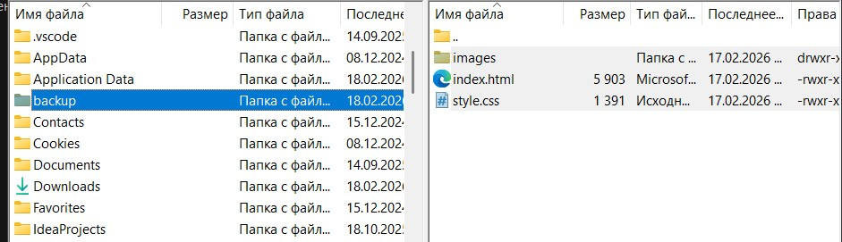

Лабораторная работа №1
1. Подключение к серверу по SSH
Подключение к серверу kubsu-dev.ru на порт 58528. Терминал Fly, ОС Linux.
Команда: ssh u82465@kubsu-dev.ru -p 58528

2. Ping (определение IP-адреса)
Ping — это команда для проверки связи с сервером, -c (количество) и 4 (4 пакета), сделала для того, чтобы не выводило бесконечное число пакетов, пока не нажмешь Ctrl+C.
Команда: ping -c 4 kubsu.ru
IP-адрес kubsu.ru: 185.13.84.92
3. nslookup (A и MX записи)
A-запись и MX-запись. Nslookup — это команда, которая запрашивает IP адрес по имени домена. A-запись связывает имя домена с IP-адресом, MX-запись указывает, какой почтовый сервер обрабатывает почту для домена. Домен — это адрес сайта в интернете, который понятен человеку.
kubsu.ru
A-запись: nslookup kubsu.ru
MX-запись: nslookup -type=mx kubsu.ru

kubsu-dev.ru
A-запись: nslookup kubsu-dev.ru

MX-запись: nslookup -type=mx kubsu-dev.ru
4. whois (дата регистрации доменов)
С помощью команды whois узнала дату регистрации домена kubsu.ru и kubsu-dev.ru.
kubsu.ru: whois kubsu.ru | grep -i "created"

Дата регистрации: 28 марта 1998 г.
kubsu-dev.ru: whois kubsu-dev.ru | grep -i "created"

Дата регистрации: 12 февраля 2020 г.
5. Создание папки на сервере
Создание папки web_lab1 в каталоге www на сервере.
Команда: mkdir www/web_lab1

Переход в папку с проектом на локальном компьютере.
Команда: cd C:\Users\PC\OneDrive\Desktop\webkom\web_lab1

Копирование всех файлов на сервер с помощью SCP.
Команда: scp -P 58528 -r * u82465@kubsu-dev.ru:~/www/web_lab1/
SCP — команда для копирования по SSH, -r — копирование папок, * — все файлы в текущей папке.
6. Копирование через SFTP (FileZilla)
Когда было скачано приложение, мы заполнили строки: Хост, имя пользователя, пароль и порт.
После появилась панель слева, также было нажато на папку www → web_lab1.
Был создан каталог backup, куда после были скачаны наши файлы.
Результат
Страница доступна по адресу: